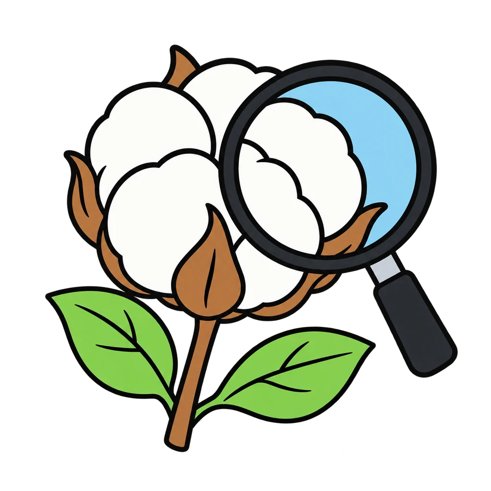
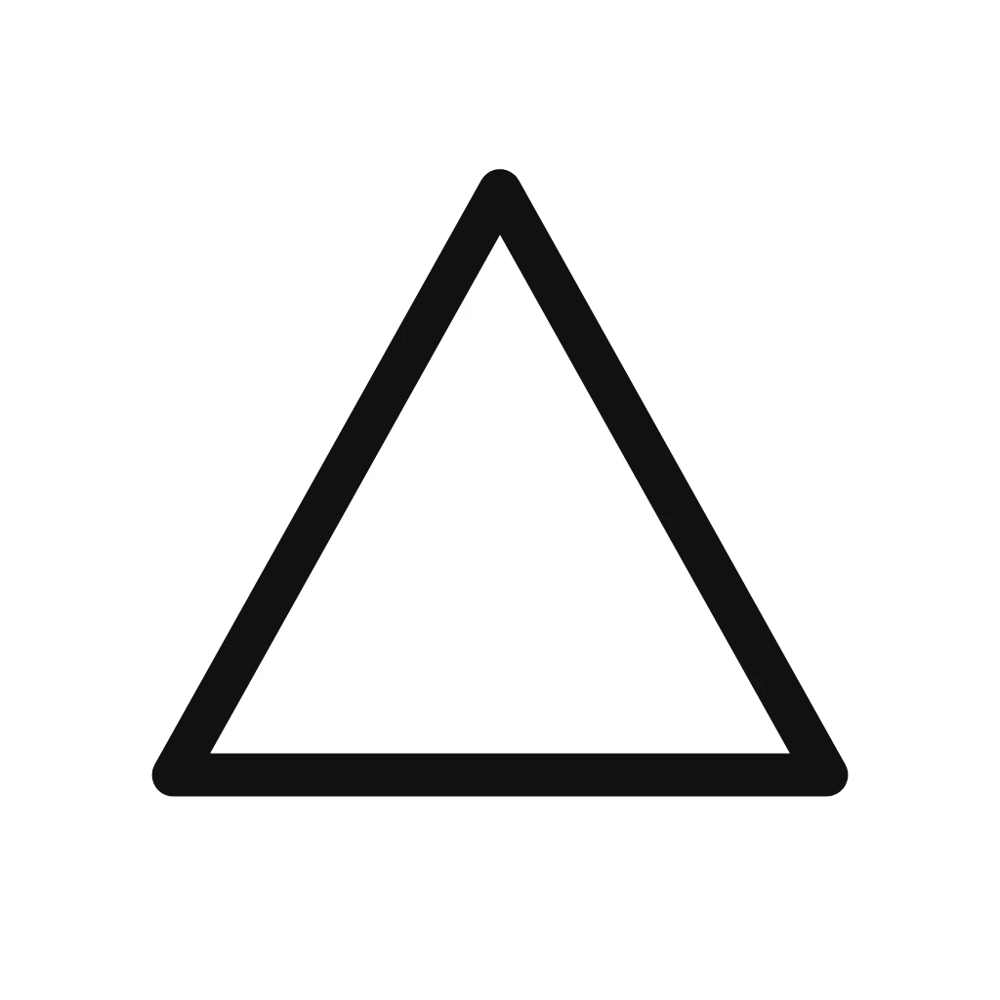
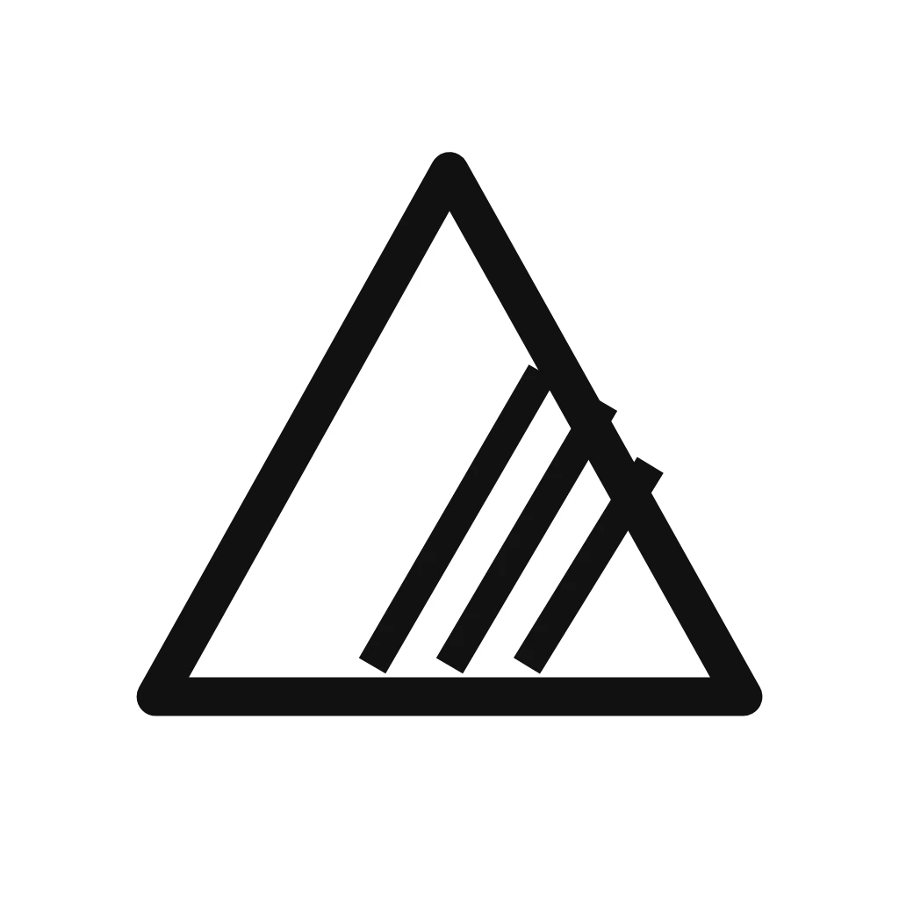
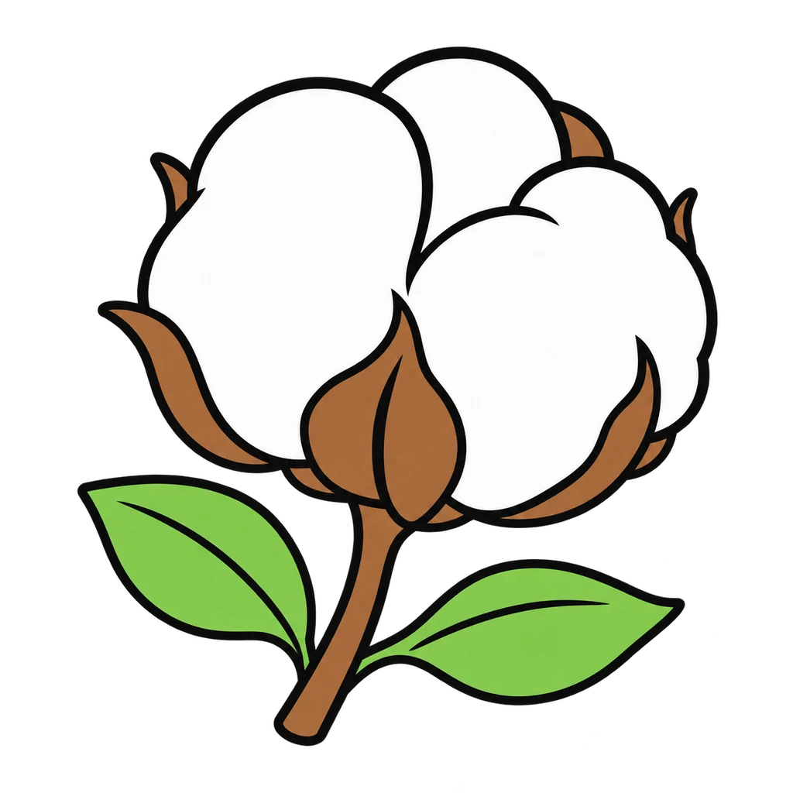
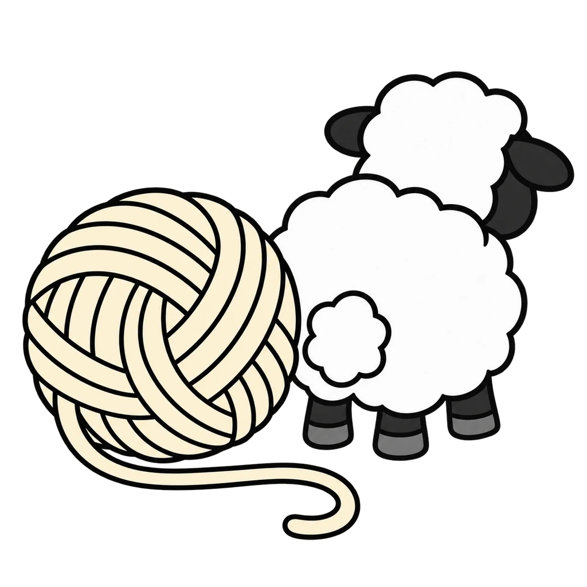
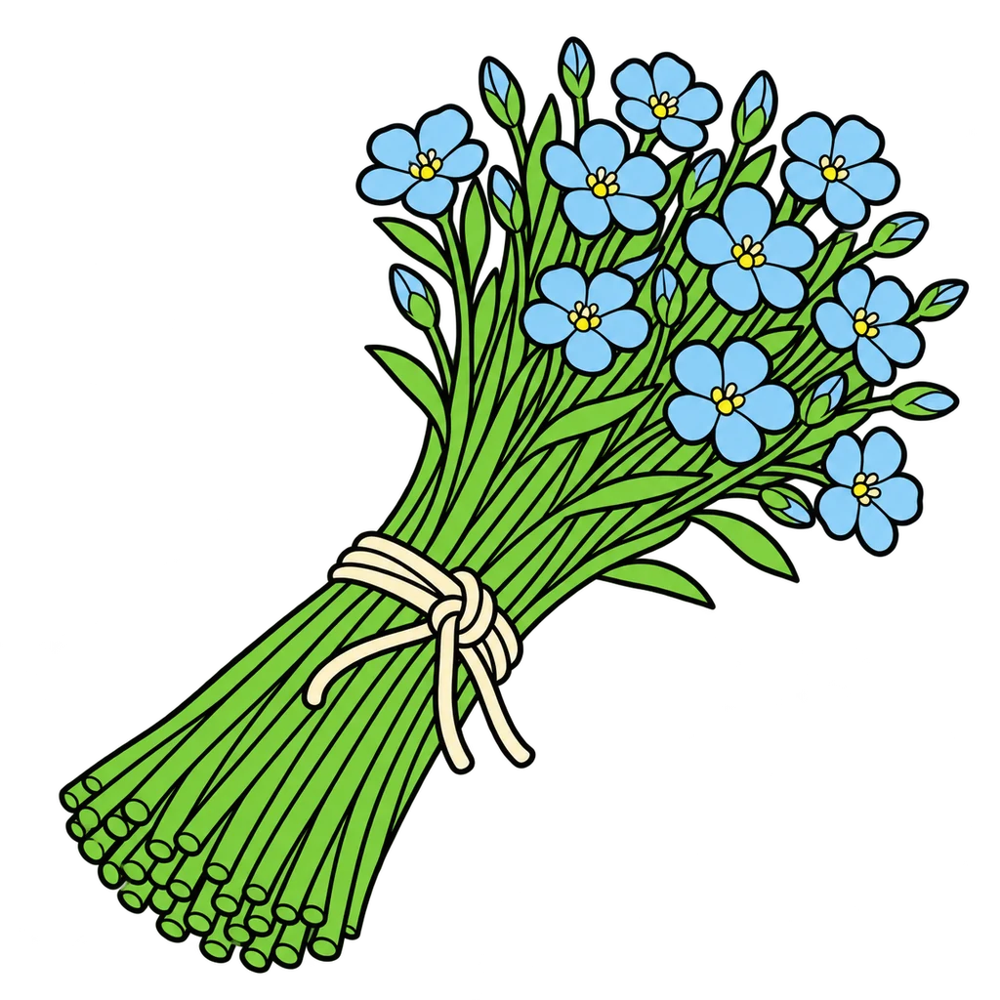
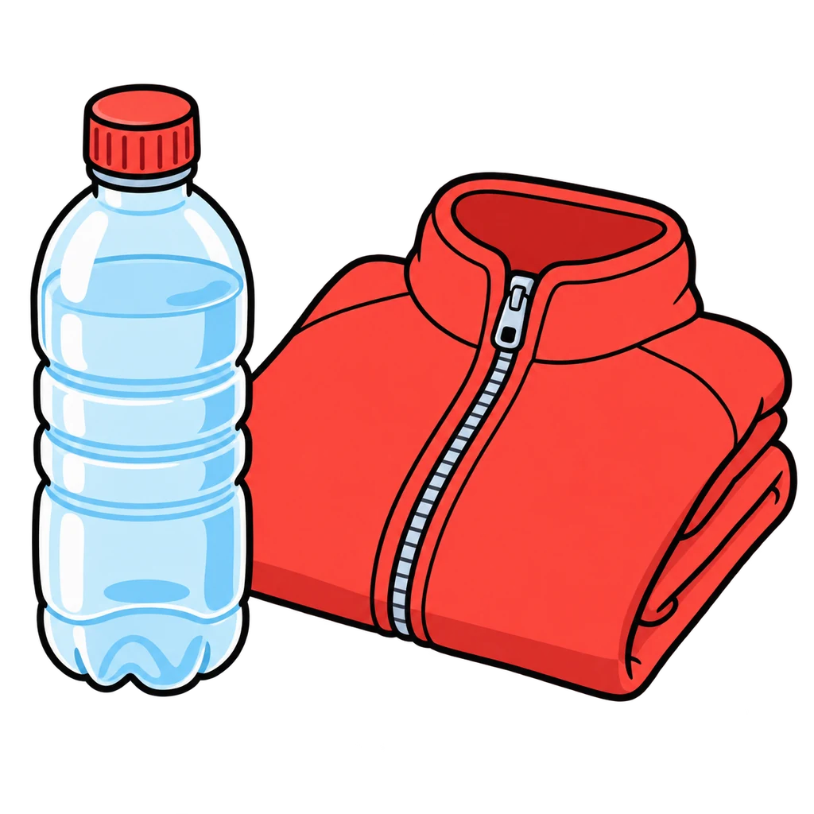
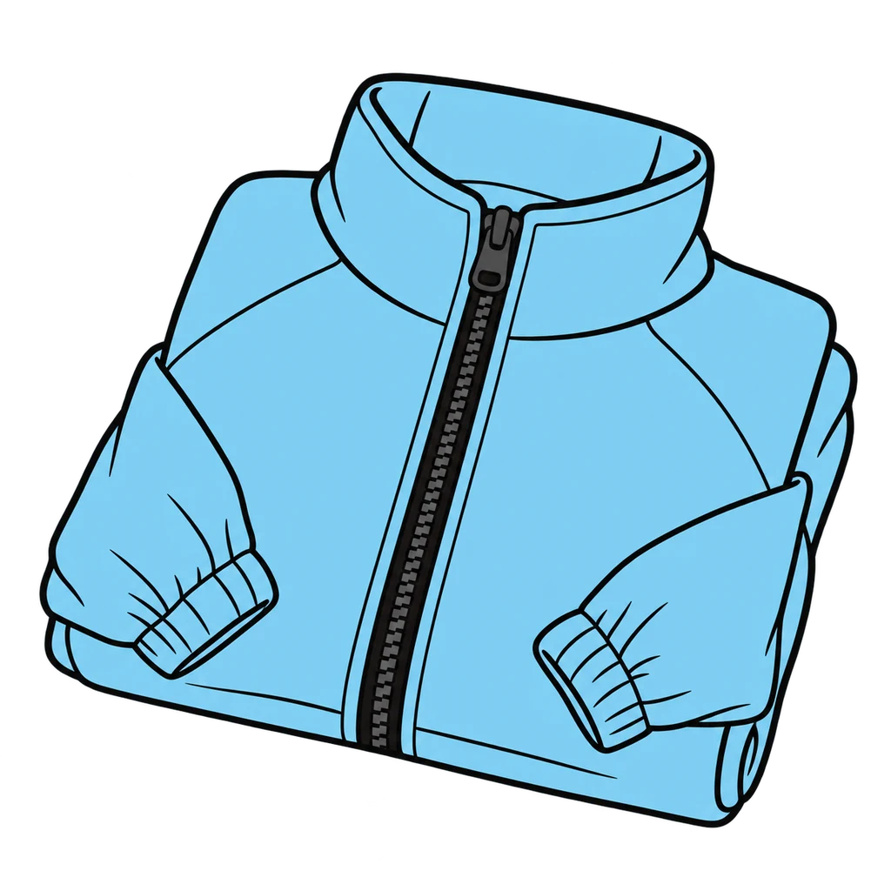
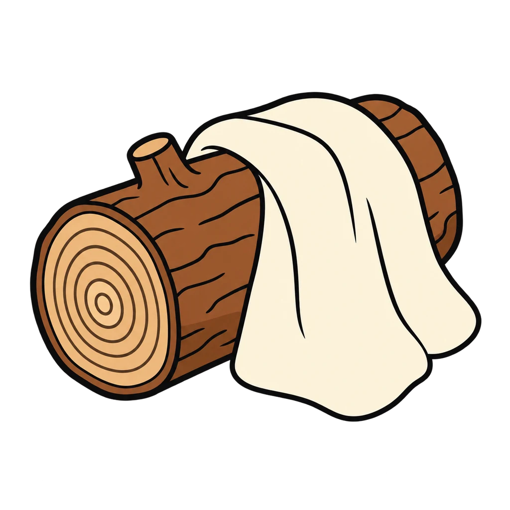
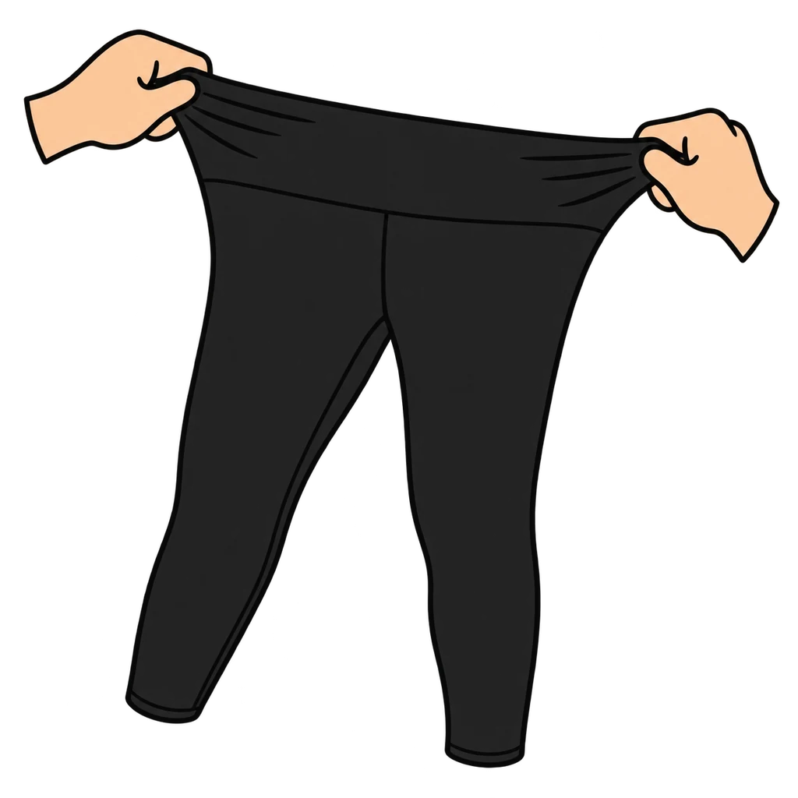

Reviews Lesson 5.3, Lesson 5.4. This game reviews Lesson 5.3, Fibers: Natural and Manufactured and Lesson 5.4, Care Labels and Laundry. Round 1: a fiber name or a clue from the lesson's table appears; tap natural or manufactured, then tap which of the eight fibers it is (cotton, wool, silk, linen, polyester, nylon, rayon, spandex). Round 2: a care symbol appears, drawn the way it is printed on a tag; tap what it means. Only the symbol families the lesson teaches (wash, bleach, dry, iron, professional care, with the dots, bars, and X marks). Use it as the do now before the Fibers and Care Quiz in Lesson 5.4 Day 2. Nothing is saved when the page closes.

Fiber Detective
Round 1: a fiber or a clue. Natural or manufactured? Then which one? Round 2: read the tag. What does the symbol mean?
How to play









Done
The ones to study:
Worth knowing by heart:
- The fiber decides the care, and the care decides how long the garment lasts.